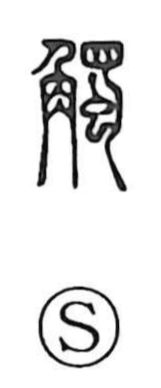

触

Uncategorized
Kun: fureru, sawaru | On: shoku
to touch ・ to come into contact ・ to feel
Explanation
Originally written 觸, this is a picto-phonetic character. The element 蜀 provides the sound value shoku, and within it 甸 sketches a male animal while the lower 虫 represents the male organ. The graph as a whole evokes male animals in the rutting season clashing, their horns meeting in combat. From this vivid image of horns coming together arose the sense of making contact—first the meeting of horns, then more broadly the act of touching and feeling.